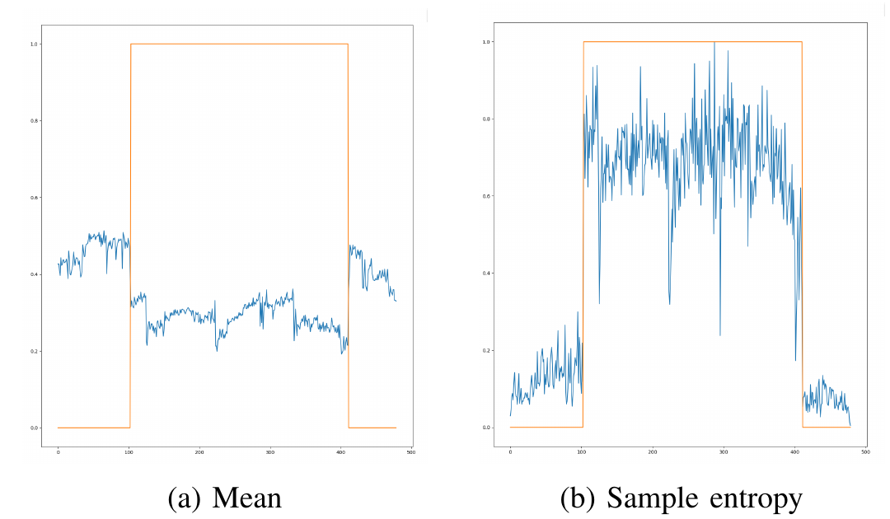

Medical Signal Processing · LTH · 2026
Atrial Fibrillation Detection
Detection of atrial fibrillation from RR-interval data using statistical feature extraction, ROC-based thresholding and machine learning.
OVERVIEW
Detecting AF from beat-to-beat variability
Atrial fibrillation is associated with irregular ventricular rhythm, which can be observed through changes in the intervals between consecutive heart beats. In this project, RR intervals extracted from ECG recordings were used to identify periods of atrial fibrillation.
Two approaches were implemented and compared: a simple, interpretable detector based on the coefficient of variation, and a multi-feature Random Forest classifier.
01
The Problem
Long-term ECG monitoring can produce large amounts of data, making manual identification of atrial fibrillation episodes impractical. An automatic detector therefore needs to identify irregular rhythm while avoiding false alarms caused by other variations in heart rhythm.
The project used RR-interval data from seven patient recordings. Patients 1–4 were used for training and parameter selection, while patients 5–7 were reserved as test recordings.
AF causes increased rhythm irregularity, but high RR variability is not unique to AF. A detector must therefore balance sensitivity to AF against false positive detections.
02
Signal Processing Pipeline
The RR-interval signal was first preprocessed using a three-sample median filter to reduce the influence of isolated abnormal RR values such as ectopic beats.
Beat-to-beat timing extracted from ECG recordings.
Kernel size 3 removes isolated abnormal values.
Local segments used for feature extraction.
Threshold detector or Random Forest.
03
CV-Based Threshold Detector
The first approach uses the coefficient of variation as a measure of relative RR-interval variability.
Features were calculated using overlapping windows of 30 RR intervals with a step size of one. Because AF typically creates irregular ventricular rhythm, higher CV values tend to indicate a greater probability of AF.
Threshold selection
CV values from patients 1–4 were normalized using only the training-data mean and standard deviation. A ROC curve was then generated and the decision threshold was selected by maximizing the Youden index.
Window predictions were mapped back to individual RR intervals. Since the windows overlap, each interval may receive multiple predictions. Majority voting was used to obtain the final classification.
04
Multi-Feature Random Forest
The second model investigates whether multiple RR-derived features can distinguish AF-related irregularity from other variations more effectively than a single variability measure.

Mean RR
Represents the average beat-to-beat interval and indirectly captures changes in heart rate.
Coefficient of Variation
Measures RR variability relative to the local mean.
RMSSD
Measures short-term variation through successive differences between RR intervals.
Sample Entropy
Measures irregularity and the level of order within the RR sequence.
The Random Forest consisted of 100 decision trees. Feature vectors were extracted from windows of 100 RR intervals and classified using the ensemble's majority decision.
05
Evaluation & Results
The two approaches showed a clear sensitivity–specificity trade-off. The CV detector was highly sensitive to AF but produced more false positives, while the Random Forest was more selective.
CV detector
| Patient | Specificity | Sensitivity |
|---|---|---|
| 5 | 0.970 | 1.000 |
| 6 | 0.755 | 1.000 |
| 7 | 0.941 | 0.996 |
The detector identified almost all annotated AF intervals for the three held-out patients, but specificity varied strongly between recordings.
Random Forest
For test patients 5–7 combined, the Random Forest with a 100-beat window achieved a sensitivity of 0.960 and a specificity of 0.989.
06
Engineering Trade-offs
The project highlighted that better classification is not defined by a single metric. A highly sensitive detector reduces the risk of missing AF episodes, but may generate more false alarms. A more selective classifier can reduce false positives, but may miss true AF intervals.
Window length introduced another trade-off. Larger windows produce more stable feature estimates, while shorter windows provide better temporal resolution and may improve detection of brief AF episodes.
Adding more features and a more complex classifier did not automatically improve every aspect of performance. Evaluation on unseen patients revealed substantial patient-to-patient variation.
07
Key Takeaways
Signal preprocessing
Applied median filtering and moving-window processing to physiological time-series data.
Feature engineering
Extracted statistical, variability and entropy-based features from RR intervals.
Model evaluation
Used ROC analysis, sensitivity and specificity to evaluate detection performance.